Choosing the reception venue is essential when organising any wedding. The reception venue accounts for a significant share of the budget and plays a major part in the success of your wedding in the Gironde. Choosing it should therefore be one of your main priorities. Here are 9 tips to help you choose the right reception venue for the big day.
What is the venue's capacity?
Your choice of reception venue must match the number of people expected, to optimise everyone's comfort and avoid unnecessary expense. Before you start looking, it is essential to have a fairly accurate estimate of the number of guests. If you are still at the planning stage, draw up a list and allow some margin for adjustment. Every reception venue has a minimum and maximum capacity. If you are inviting 100 people, it would be wiser to choose a venue that holds between 100 and 150, rather than a huge venue for 500, which could feel empty and too big for the event. The aim is to keep superfluous costs to a minimum, such as hiring decor, lighting or sound.

Is your venue too small for the number of guests? If so, it will create a stifling, uncomfortable feeling. Your choice of reception venue and its capacity should therefore be guided first and foremost by the number of guests.
Are the dates available?
- Before booking your chosen venue, check that no other receptions are planned on the same day to avoid inconvenience.
- If you share your reception venue with others, clearly separate the spaces so you aren't disturbed.
- Find out the exact length of the hire. Ask what time the venue must be vacated, or you may find yourself racing against the clock, especially if you have planned a long ceremony or a reception in several stages (drinks, dinner, dancing…).
- Prefer a hire for a full day or even several days, especially if you are planning pre-ceremony activities or extra events such as rehearsals, photo shoots or a brunch the day after the wedding.
So be sure to check the available time slot so you know what time you must arrive and leave, and avoid paying extra charges.
Setting a clear budget
- Set a realistic budget: the cost of hiring the reception venue is generally between 30% and 50% of the total wedding budget. For example, if your total budget is €20,000, you could spend between €6,000 and €10,000 on the venue.
- Take all the associated costs into account, because the venue price isn't just the room hire itself; it often comes with other services such as decor (some venues provide basic decor), furniture, extra equipment, cleaning fees or staff. On top of this come the caterer, the decor, the wedding planner, the entertainment…
- When you love a reception venue but it is too expensive, you can always: negotiate; reduce the hire period if you only need part of the day; drop unnecessary extra services; or be flexible on the date by choosing a less popular period (a winter wedding or a weekday).
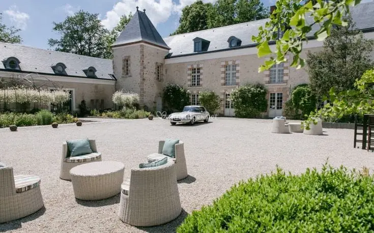
Is the reception venue easy to reach?
- Ideally, choose a reception venue relatively close to your ceremony venue or your home. It will be easier for wedding guests to find and will reduce travel costs.
- The location must be easily accessible by any vehicle. Whatever their means of transport, guests need to be able to park without difficulty.
- It is also wise to consider how close the venue is to accommodation. Do your guests live in the Gironde? Are they in the Bordeaux region or coming from far away? If so, most won't be able to leave in the evening.
The reception venue should therefore be able to welcome people and accommodate guests who want to stay on site.
Take the season and weather into account
Here are a few recommendations to make sure your reception venue suits the season and the weather:
- - In summer, the ideal is to find a venue that offers both an outdoor terrace or garden and a large indoor space (reception room, clear marquee or tent) that can adapt to the weather. You can enjoy the open air if the weather is fine and shelter indoors if it changes. In summer, shaded areas with misters or fans are much appreciated for guests' comfort, especially as the oceanic climate of the Bordeaux region brings hot, dry summers and fairly mild winters.
- - Conversely, in winter, a well-heated reception venue with extra heaters, a fireplace and natural light is pleasant.
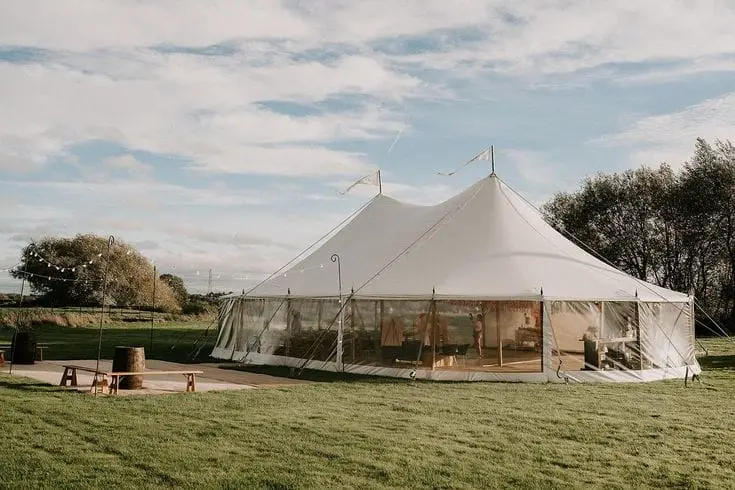
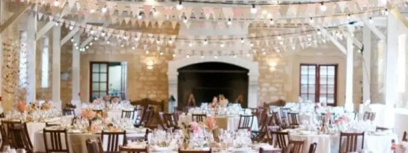
What is your wedding theme?
The key is to choose a place that reflects your story and your vision of this exceptional day. What kind of atmosphere do you want to create? Which venue would leave you with an unforgettable memory? Here are a few ideas for sophisticated, bohemian and country venues:
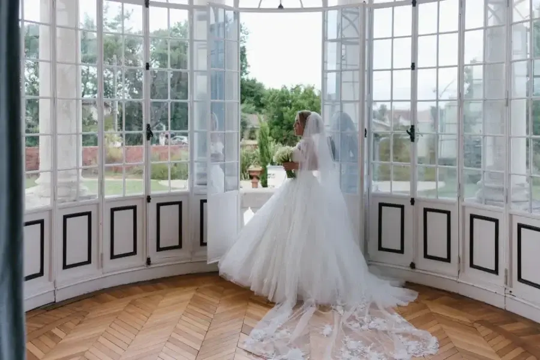
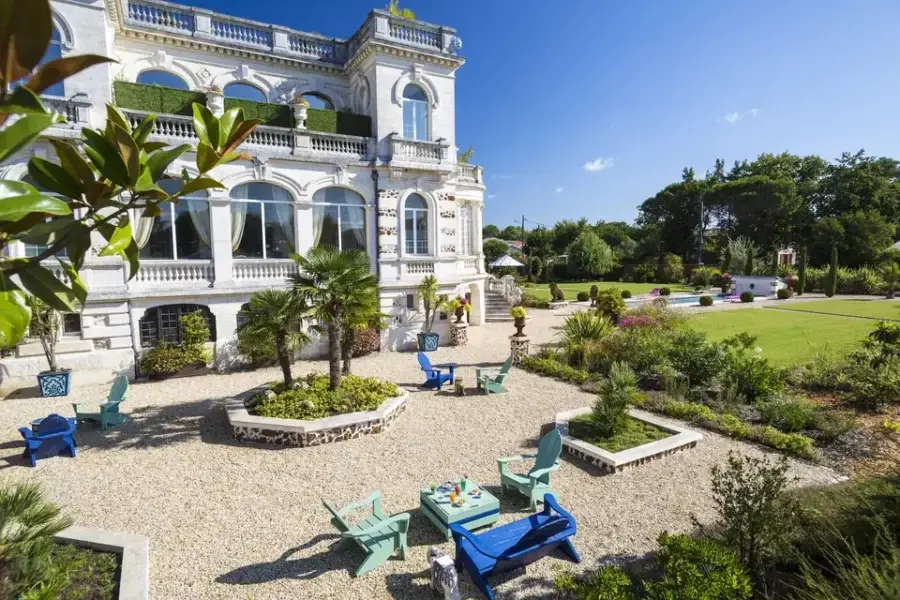
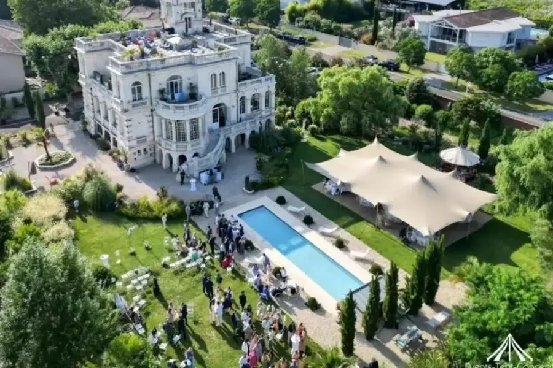
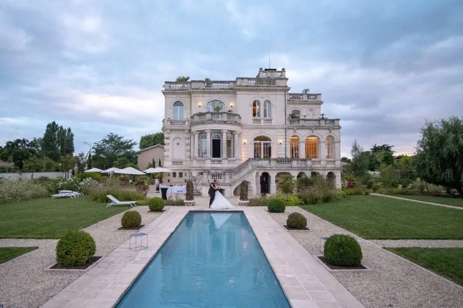
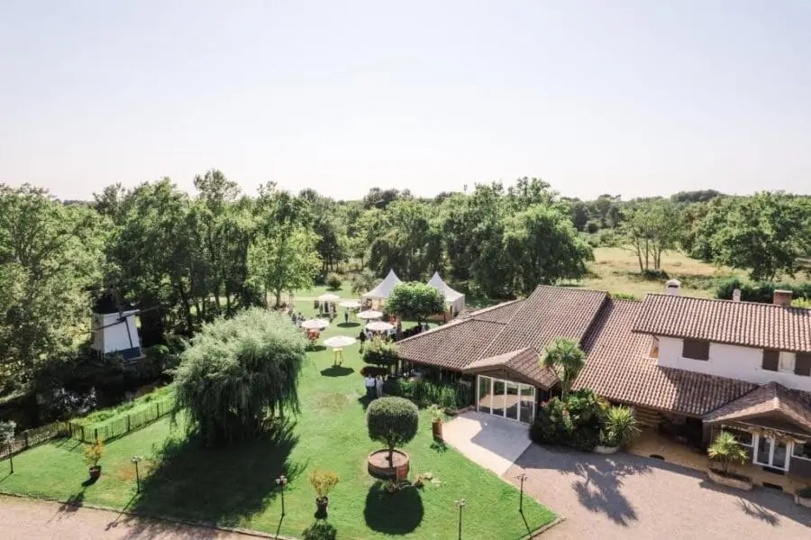
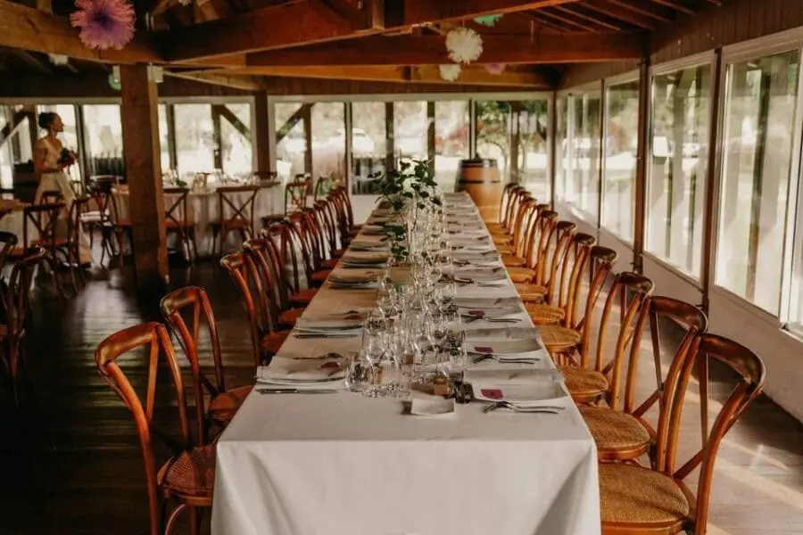
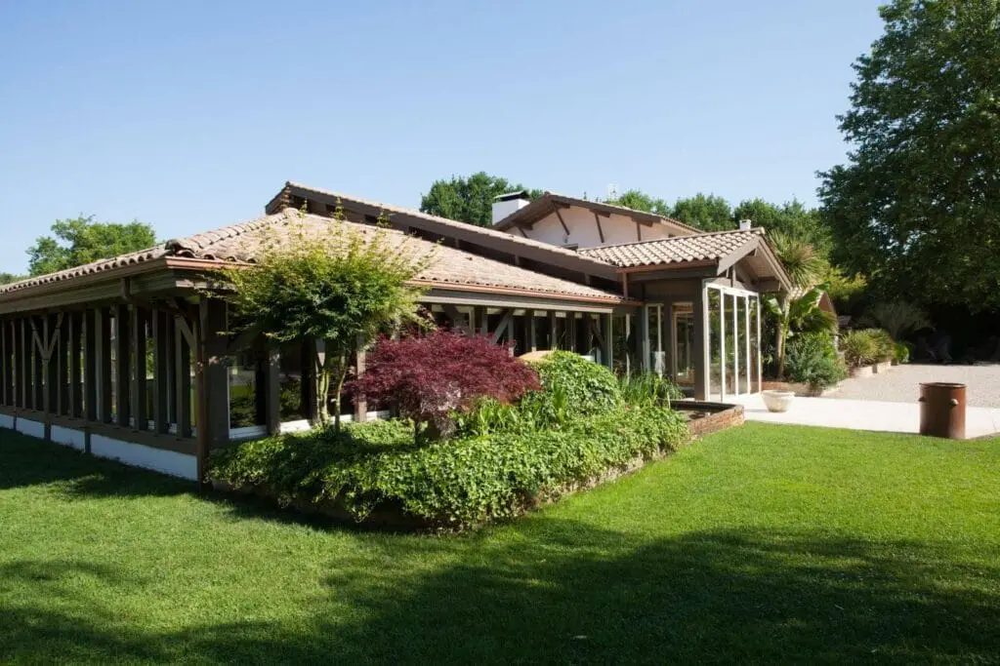
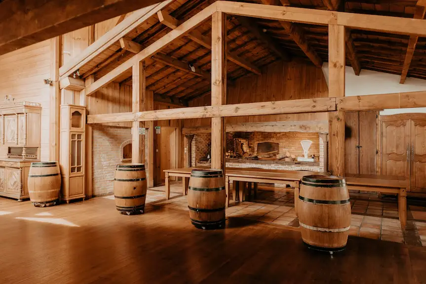
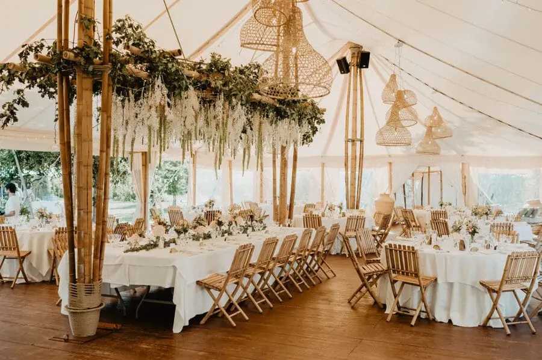
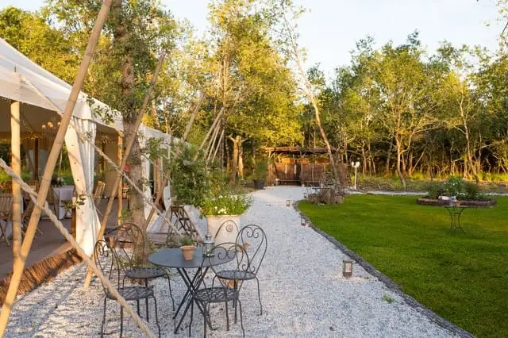
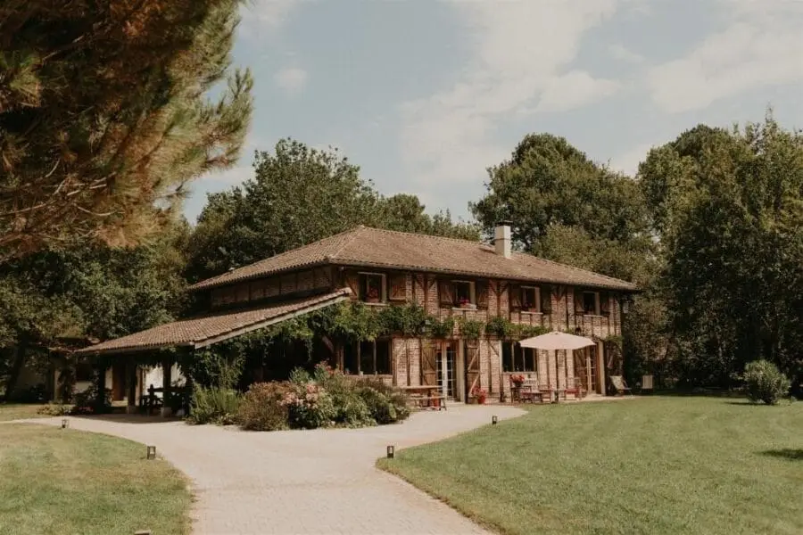
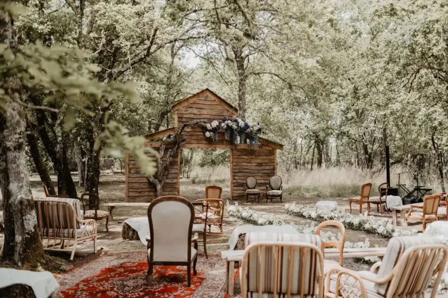
Check the logistics
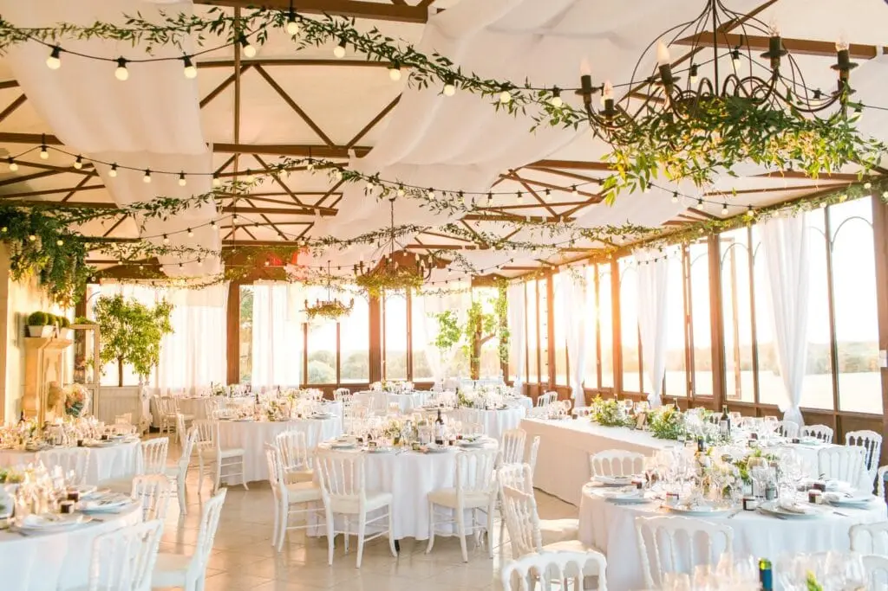
Technical questions: acoustics, decor, entertainment...
- Ask the venues what is allowed and forbidden. For example, which decorations you can install (garlands, flowers, banners, etc.). Are traditional candles allowed, or only alternatives (LED candles or flameless lanterns)?
- Is there heating, a caretaker, a curfew? Are drawing pins, adhesive tape, nails or fireworks permitted? Generally speaking, there is no such thing as a silly question, so don't hesitate to ask all the questions that come to mind.
Before falling for the venue of your dreams, be sure to ask whether it imposes certain suppliers, because if one of them doesn't suit you, don't sign!
Ask for recommendations and read reviews
Online reviews of past couples' experiences can give you valuable information about aspects you might not have been prepared for. But it is best to read several recent reviews to get an overall picture, as older reviews may no longer be representative.
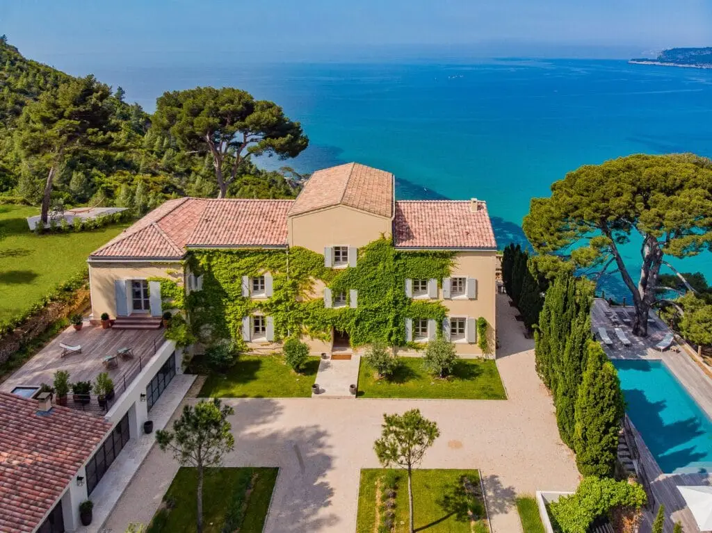
Ask friends or family members for advice on reception venues, especially those who have recently married.
Consult me for an objective opinion, as I am familiar with the area and the various suppliers of the Bordeaux region. I will guide you towards solutions suited to your budget, your wishes and your constraints. My expertise is a valuable asset to help you avoid common mistakes, handle the unexpected on the day and optimise the organisation.
Finally, another good way to find out more is to attend wedding fairs, where you can meet suppliers as well as couples who have recently organised their wedding. These events often give you the chance to meet suppliers, discover venues through models or videos and ask questions face to face. But nothing beats a site visit to really picture yourself there and put your questions to the venue manager.
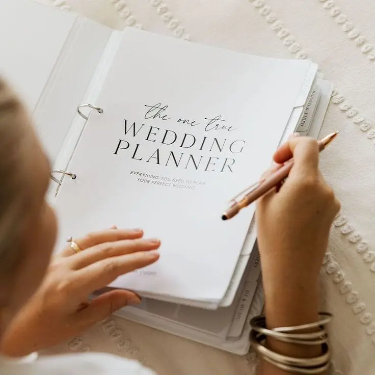
Plan ahead
Start your search as early as possible so you have choice and time! The most sought-after wedding reception venues have booking calendars that are full several months, or even several years, in advance.
You will be able to visit various reception venues: a magnificent château, a rustic barn, a farmhouse, a stone house in the heart of the countryside…
This way, you can be sure to book your favourite in the Bordeaux region!
In short…
The choice of reception venue should be considered in terms of capacity, availability, budget, accessibility, weather and season, theme and logistics.
And you, have you started planning your wedding? Gathering recommendations to prepare the most beautiful day of your life?
Lovely Day Event offers several services
Wedding planning
I step in at every stage of your preparations and guide you through your choices, bringing ideas and suggestions so that your wedding looks like no one but you.
On-the-day coordination
I will be the conductor of your day, managing the suppliers, the set-up of your decor and the smooth running of this beautiful day.
Wedding design
Creative and passionate, I am a certified Wedding Designer and I create a scenographic atmosphere that matches the theme of your wedding. Styling is included in the Signature package, or offered as an add-on to on-the-day coordination.